2026 National 5 Mathematics - Paper 2 questions
Source: Scottish Qualifications Authority (SQA) / Qualifications Scotland. This is a StemInteract HTML companion, not an official HTML edition. Selectable text is supplied alongside original page images. Use the images or original PDF for equations, powers, fractions, vector notation, tables and diagrams; text extraction cannot fully preserve mathematical layout.
Jump to a question
PDF page 1
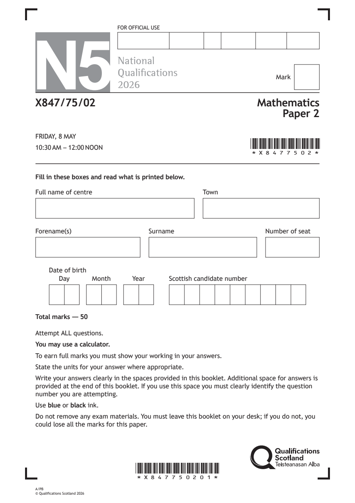
Selectable page text
FOR OFFICIAL USE
N5
National
Qualications
Mark
2026
X847/75/02 Mathematics
Paper 2
FRIDAY, 8 MAY
10:30 AM – 12:00 NOON
*X8477502*
Fill in these boxes and read what is printed below.
Full name of centre Town
Forename(s) Surname Number of seat
Date of birth
Day Month Year Scottish candidate number
Total marks — 50
Attempt ALL questions.
You may use a calculator.
To earn full marks you must show your working in your answers.
State the units for your answer where appropriate.
Write your answers clearly in the spaces provided in this booklet. Additional space for answers is
provided at the end of this booklet. If you use this space you must clearly identify the question
number you are attempting.
Use blue or black ink.
Do not remove any exam materials. You must leave this booklet on your desk; if you do not, you
could lose all the marks for this paper.
*X847750201*
A/PB
© Qualifications Scotland 2026PDF page 2
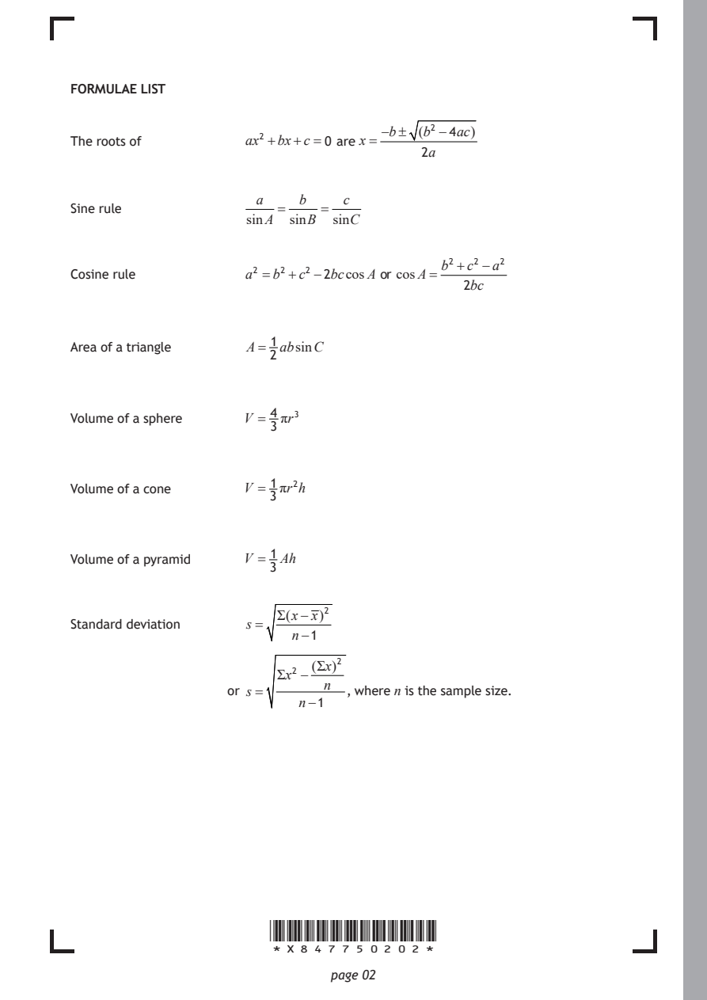
Selectable page text
FORMULAE LIST
−b± (b² −4ac)
The roots of ax² +bx+c=0 are x=
2a
a b c
Sine rule = =
sinA sinB sinC
b² +c²−a²
Cosine rule a² =b²+c² −2bccosA or cosA=
2bc
1
Area of a triangle A= absinC
2
4
Volume of a sphere V = πr³
3
1
Volume of a cone V = πr²h
3
1
Volume of a pyramid V = Ah
3
Σ(x−x)²
Standard deviation s =
n−1
(Σx)²
Σx² −
n
or s = , where n is the sample size.
n−1
*X847750202*
page 02PDF page 3
Paper 2, Question 1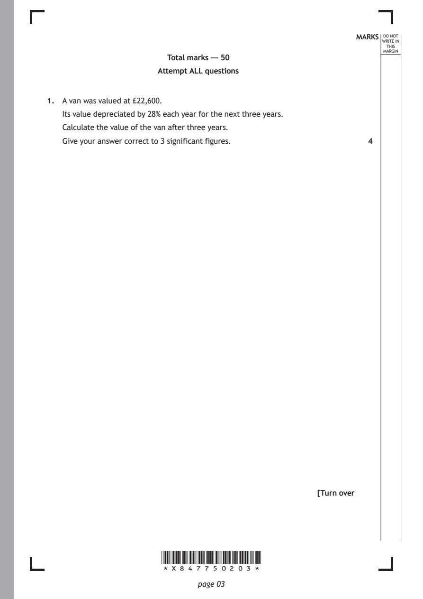
Selectable page text
MARKS _{W}^{D}_{R}^{O}_{I} _{T}^{N}OT
E IN
THIS
MARGIN
Total marks — 50
Attempt ALL questions
1. A van was valued at £22,600.
Its value depreciated by 28% each year for the next three years.
Calculate the value of the van after three years.
Give your answer correct to 3 significant figures. 4
[Turn over
*X847750203*
page 03PDF page 4
Paper 2, Question 2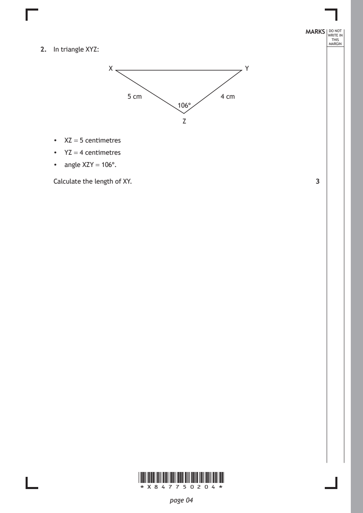
Selectable page text
MARKS _{W}^{D}_{R}^{O}_{I} _{T}^{N}OT
E IN
THIS
MARGIN
2. In triangle XYZ:
X Y
5 cm 4 cm
106°
Z
• XZ = 5 centimetres
• YZ = 4 centimetres
• angle XZY = 106°.
Calculate the length of XY. 3
*X847750204*
page 04PDF page 5
Paper 2, Question 3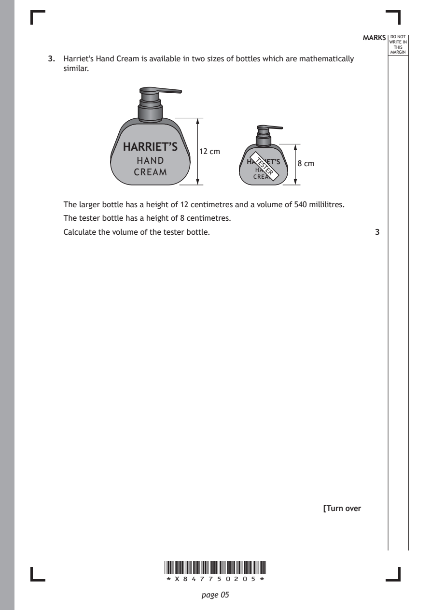
Selectable page text
MARKS _{W}^{D}_{R}^{O}_{I} _{T}^{N}OT
E IN
THIS
MARGIN
3. Harriet’s Hand Cream is available in two sizes of bottles which are mathematically
similar.
HARRIET’S
12 cm
HAND HATRE S R T IE _{D} T’S 8 cm
CREAM HANE R
CREAM
The larger bottle has a height of 12 centimetres and a volume of 540 millilitres.
The tester bottle has a height of 8 centimetres.
Calculate the volume of the tester bottle. 3
[Turn over
*X847750205*
page 05PDF page 6
Paper 2, Question 4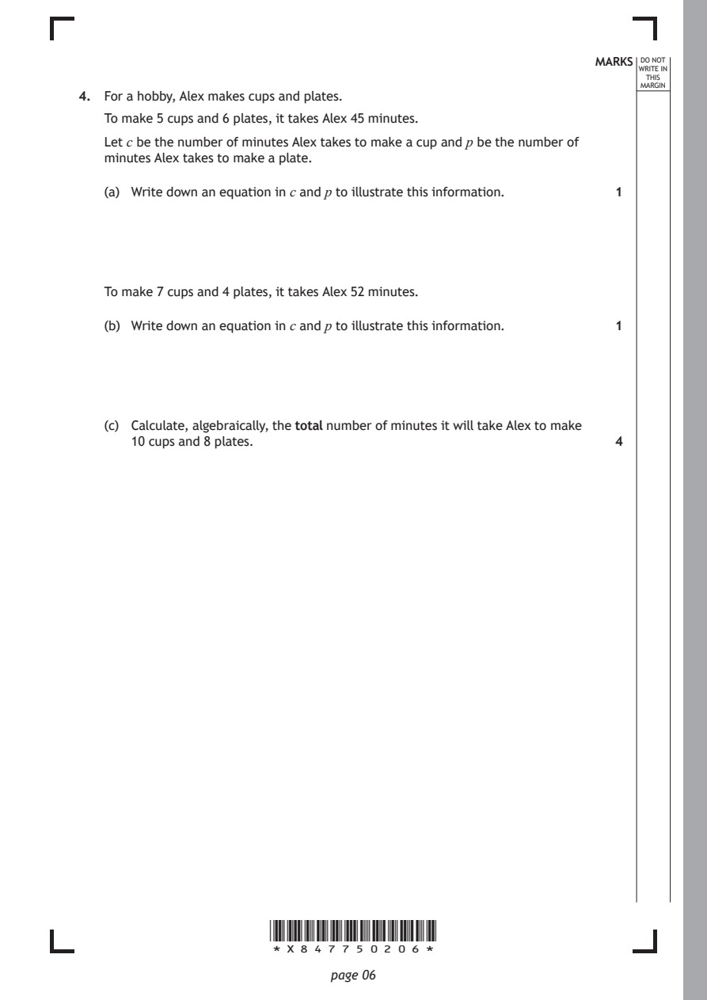
Selectable page text
MARKS _{W}^{D}_{R}^{O}_{I} _{T}^{N}OT
E IN
THIS
MARGIN
4. For a hobby, Alex makes cups and plates.
To make 5 cups and 6 plates, it takes Alex 45 minutes.
Let c be the number of minutes Alex takes to make a cup and p be the number of
minutes Alex takes to make a plate.
(a) Write down an equation in c and p to illustrate this information. 1
To make 7 cups and 4 plates, it takes Alex 52 minutes.
(b) Write down an equation in c and p to illustrate this information. 1
(c) Calculate, algebraically, the total number of minutes it will take Alex to make
10 cups and 8 plates. 4
*X847750206*
page 06PDF page 7
Paper 2, Question 5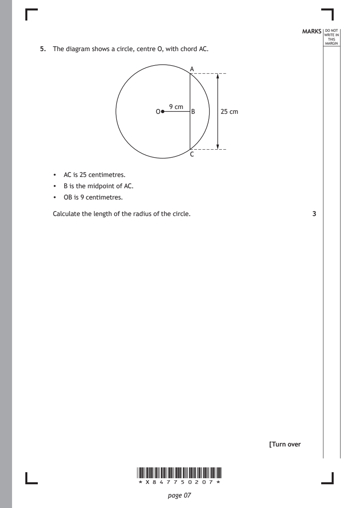
Selectable page text
MARKS _{W}^{D}_{R}^{O}_{I} _{T}^{N}OT
E IN
THIS
MARGIN
5. The diagram shows a circle, centre O, with chord AC.
A
9 cm
O B 25 cm
C
• AC is 25 centimetres.
• B is the midpoint of AC.
• OB is 9 centimetres.
Calculate the length of the radius of the circle. 3
[Turn over
*X847750207*
page 07PDF page 8
Paper 2, Question 6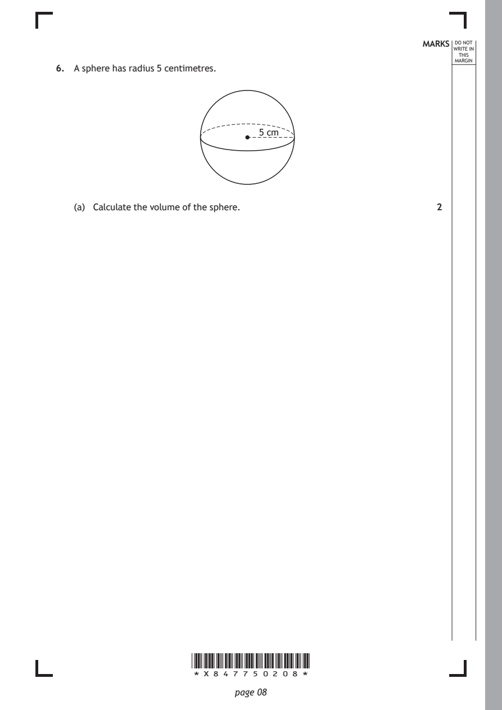
Selectable page text
MARKS _{W}^{D}_{R}^{O}_{I} _{T}^{N}OT
E IN
THIS
MARGIN
6. A sphere has radius 5 centimetres.
5 cm
(a) Calculate the volume of the sphere. 2
*X847750208*
page 08PDF page 9
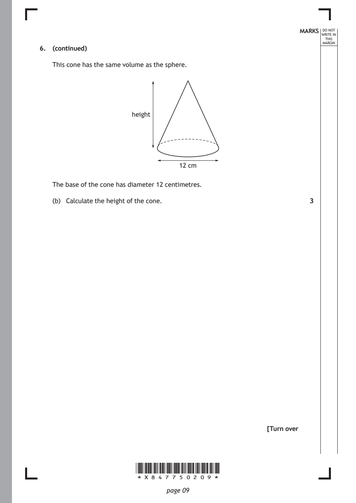
Selectable page text
MARKS _{W}^{D}_{R}^{O}_{I} _{T}^{N}OT
E IN
THIS
MARGIN
6. (continued)
This cone has the same volume as the sphere.
height
12 cm
The base of the cone has diameter 12 centimetres.
(b) Calculate the height of the cone. 3
[Turn over
*X847750209*
page 09PDF page 10
Paper 2, Question 7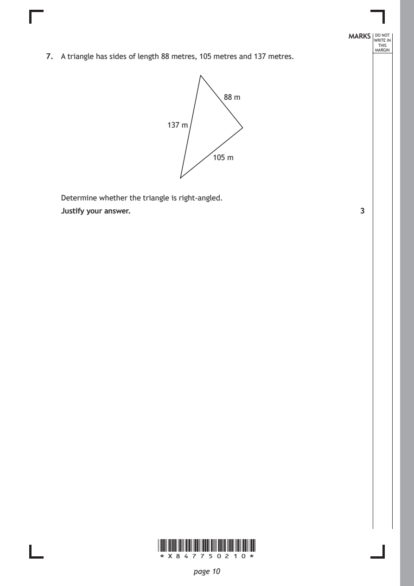
Selectable page text
MARKS _{W}^{D}_{R}^{O}_{I} _{T}^{N}OT
E IN
THIS
MARGIN
7. A triangle has sides of length 88 metres, 105 metres and 137 metres.
88 m
137 m
105 m
Determine whether the triangle is right-angled.
Justify your answer. 3
*X847750210*
page 10PDF page 11
Paper 2, Question 8Paper 2, Question 9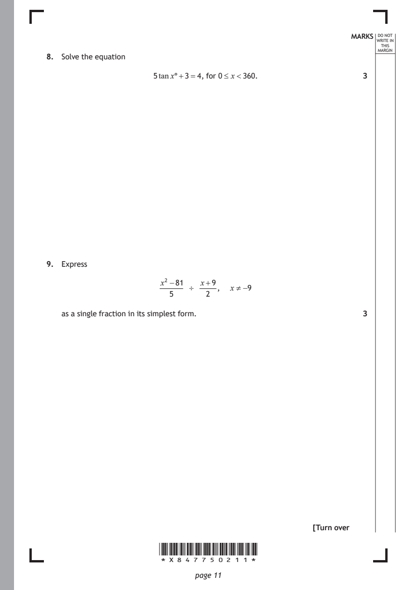
Selectable page text
MARKS _{W}^{D}_{R}^{O}_{I} _{T}^{N}OT
E IN
THIS
MARGIN
8. Solve the equation
5tanx°+3=4, for 0≤ x<360. 3
9. Express
x² −81 x+9
÷ , x −9
5 2
as a single fraction in its simplest form. 3
[Turn over
*X847750211*
page 11PDF page 12
Paper 2, Question 10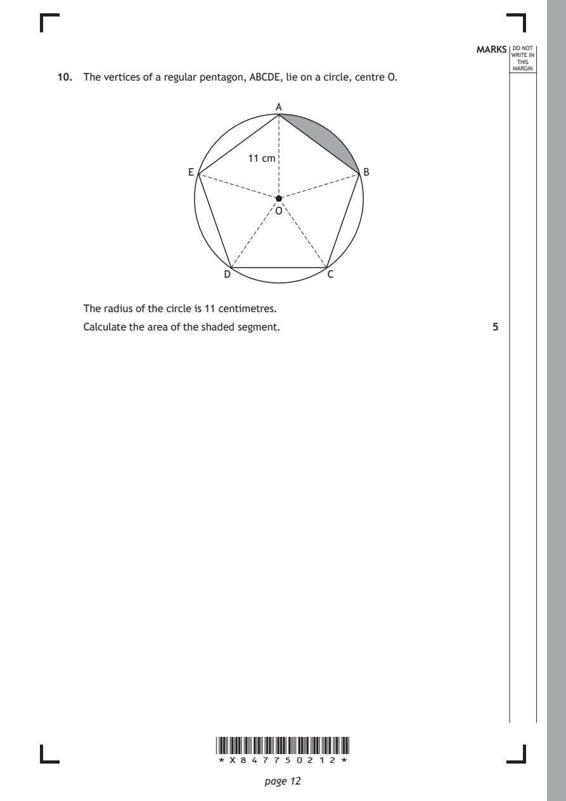
Selectable page text
MARKS _{W}^{D}_{R}^{O}_{I} _{T}^{N}OT
E IN
THIS
MARGIN
10. The vertices of a regular pentagon, ABCDE, lie on a circle, centre O.
A
11 cm
E B
O
D C
The radius of the circle is 11 centimetres.
Calculate the area of the shaded segment. 5
*X847750212*
page 12PDF page 13
Paper 2, Question 11Paper 2, Question 12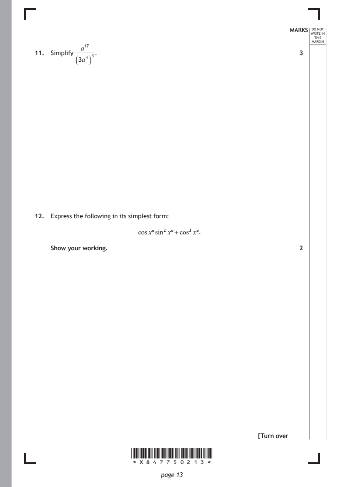
Selectable page text
MARKS _{W}^{D}_{R}^{O}_{I} _{T}^{N}OT
E IN
THIS
MARGIN
a¹⁷
11. Simplify . 3
( )
3a⁴ ³
12. Express the following in its simplest form:
cosx°sin² x°+cos³ x°.
Show your working. 2
[Turn over
*X847750213*
page 13PDF page 14
Paper 2, Question 13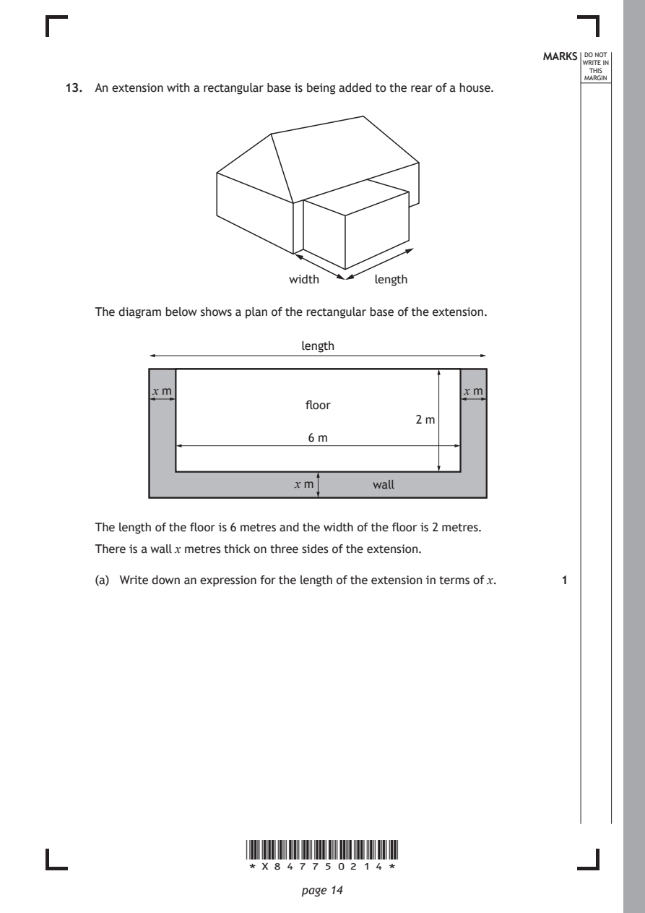
Selectable page text
MARKS _{W}^{D}_{R}^{O}_{I} _{T}^{N}OT
E IN
THIS
MARGIN
13. An extension with a rectangular base is being added to the rear of a house.
width length
The diagram below shows a plan of the rectangular base of the extension.
length
x m x m
floor
2 m
6 m
x m wall
The length of the floor is 6 metres and the width of the floor is 2 metres.
There is a wall x metres thick on three sides of the extension.
(a) Write down an expression for the length of the extension in terms of x. 1
*X847750214*
page 14PDF page 15
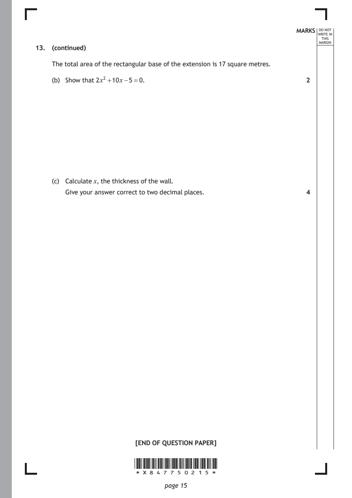
Selectable page text
MARKS _{W}^{D}_{R}^{O}_{I} _{T}^{N}OT
E IN
THIS
MARGIN
13. (continued)
The total area of the rectangular base of the extension is 17 square metres.
(b) Show that 2x² +10x−5=0. 2
(c) Calculate x, the thickness of the wall.
Give your answer correct to two decimal places. 4
[END OF QUESTION PAPER]
*X847750215*
page 15PDF page 16
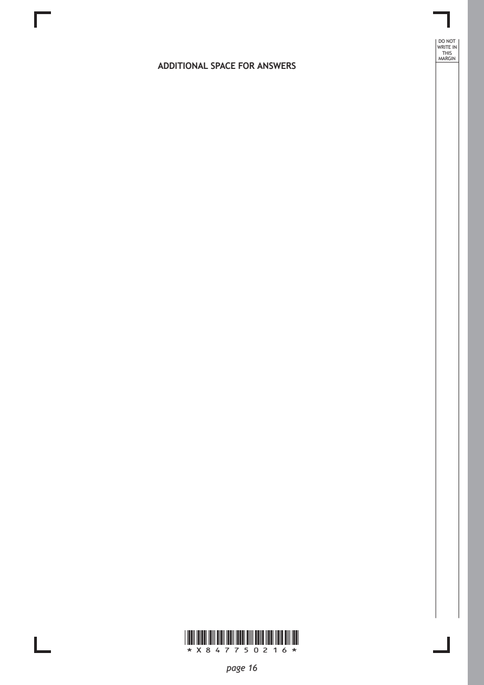
Selectable page text
DO NOT
WRITE IN
THIS
MARGIN
ADDITIONAL SPACE FOR ANSWERS
*X847750216*
page 16PDF page 17
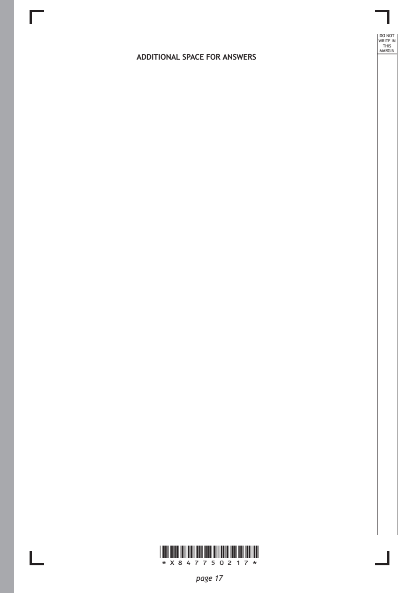
Selectable page text
DO NOT
WRITE IN
THIS
MARGIN
ADDITIONAL SPACE FOR ANSWERS
*X847750217*
page 17PDF page 18
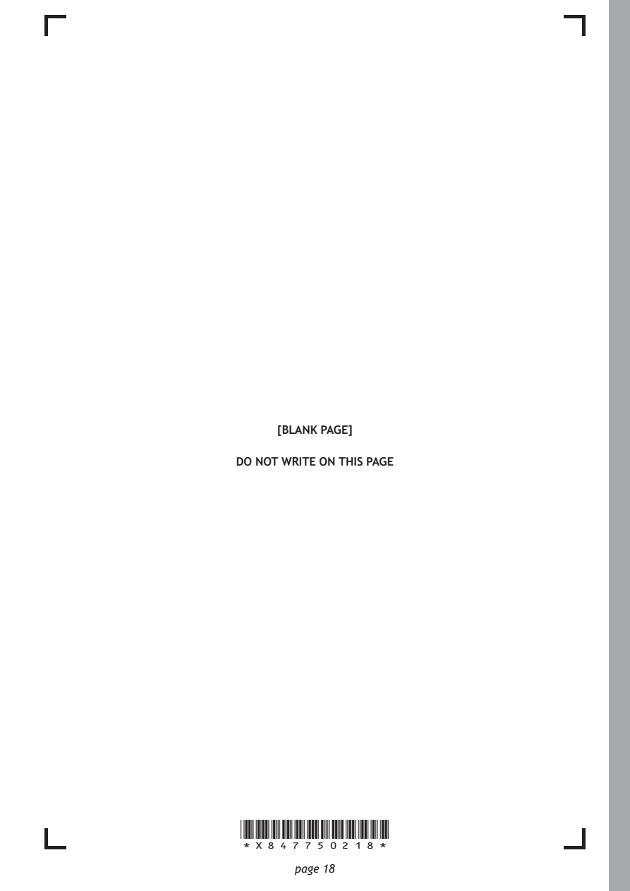
Selectable page text
[BLANK PAGE]
DO NOT WRITE ON THIS PAGE
*X847750218*
page 18PDF page 19
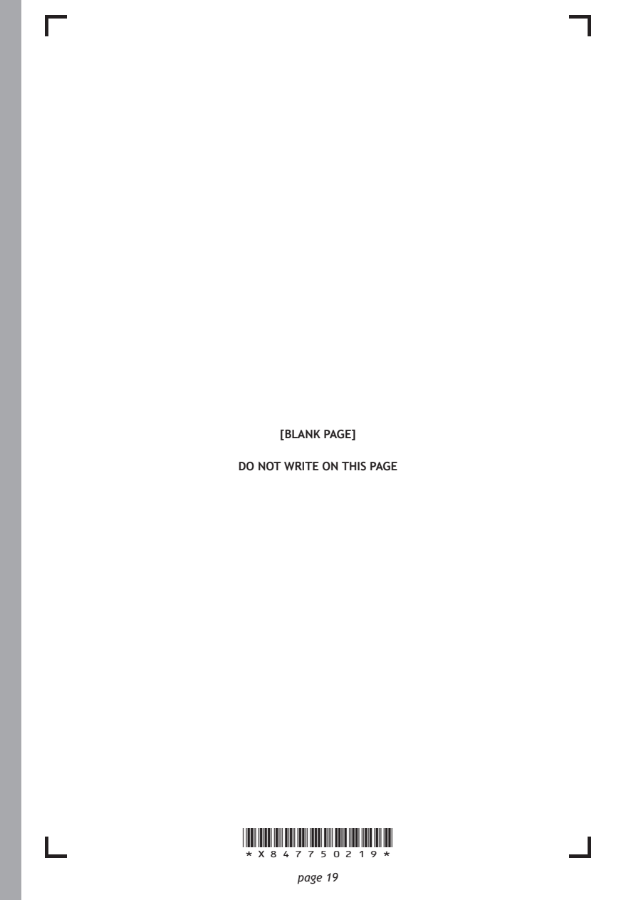
Selectable page text
[BLANK PAGE]
DO NOT WRITE ON THIS PAGE
*X847750219*
page 19PDF page 20
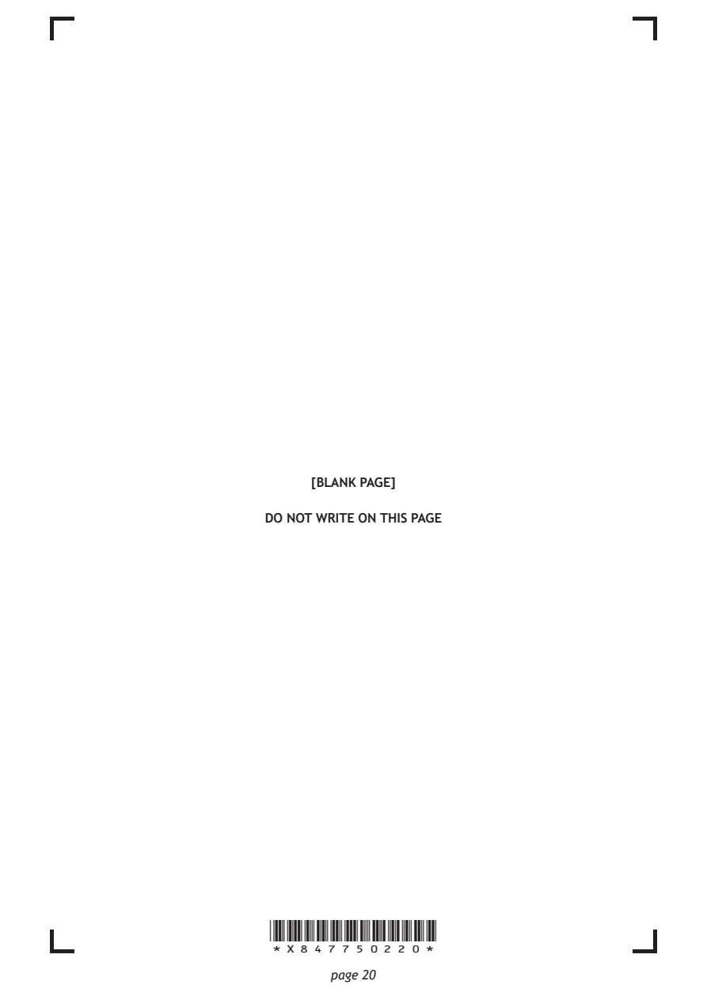
Selectable page text
[BLANK PAGE]
DO NOT WRITE ON THIS PAGE
*X847750220*
page 20